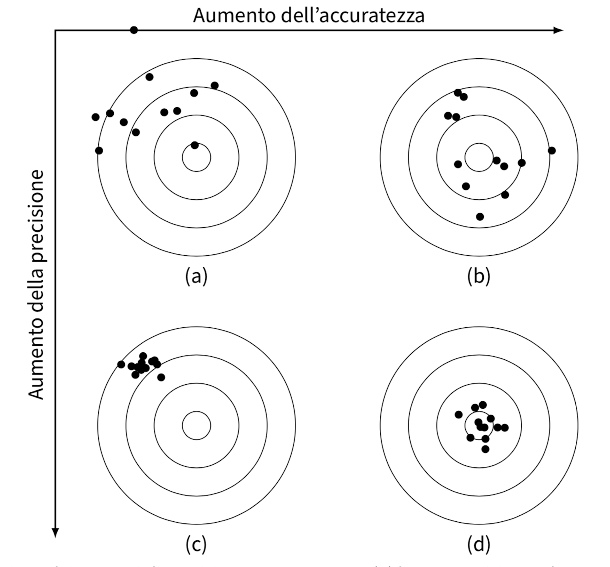

10. La misurazione in psicologia#
In questo capitolo verranno introdotte alcune nozioni di base relative ai temi della misurazione quantitativa delle caratteristiche psicologiche. In particolare, verrà presentata la teoria delle scale di misura di Stevens [Ste46].
10.1. Misurare la mente umana#
Introduco il problema della misurazione in psicologia con alcune riflessioni sull’intelligenza. L’intelligenza è costrutto psicologico comunemente misurato. Anche le persone che non sono psicologi sono familiari con i test di intelligenza, che consistono in una serie di problemi verbali, numerici o simbolici, e che misurano le differenze individuali nell’abilità di risolverli. Queste differenze risultano stabili nell’età adulta, e diversi test di intelligenza tendono ad essere correlati positivamente. Ciò consente di esaminare le associazioni tra i punteggi dei test di intelligenza e altre variabili, come il successo sul lavoro, il guadagno, le preferenze di voto o l’aspettativa di vita. Gli psicologi hanno condotto numerose ricerche sull’intelligenza umana, esplorando diverse condizioni, variabili e gruppi di persone.
Tuttavia, nonostante un secolo di ricerca sui test di intelligenza e sui test psicologici in generale, non sappiamo ancora esattamente cosa misurino. Questo ci porta a riflettere sulle complessità della teoria della misurazione psicologica e sulle domande che si pongono, come “che cos’è esattamente un costrutto psicologico?” e “come può essere misurato?”. L’argomento delle scale di misura è strettamente legato a questa problematica, ma richiede un approfondimento che verrà affrontato in successivi insegnamenti sulla testistica psicologica. Per il nostro scopo in questo insegnamento, è sufficiente comprendere le proprietà di un elemento fondamentale della misurazione psicologica: la differenza tra le diverse scale di misura.
10.2. Le scale di misura#
In generale, la teoria della misurazione si occupa di studiare le relazioni tra il “mondo fisico” e il “mondo psicologico”. Secondo questa teoria, la misurazione è un’attività rappresentativa che consiste nell’assegnare dei numeri in modo da preservare le relazioni qualitative osservate nel mondo empirico. Lo scopo della teoria della misurazione è quello di specificare le condizioni necessarie per costruire una rappresentazione adeguata delle relazioni empiriche all’interno di un sistema numerico. Formalmente, le operazioni descritte dalla teoria della misurazione possono essere pensate come una mappatura tra le relazioni all’interno dei due insiemi (empirico e numerico), e il risultato di questa attività è la “scala di misurazione”.
Il famoso psicologo Stevens [Ste46] ha proposto una teoria delle scale di misura in cui si sostiene che le variabili psicologiche rappresentano con diversi gradi di precisione le relazioni qualitative dei fenomeni psicologici. Secondo questa teoria, esistono quattro tipi di scale di misurazione: nominali, ordinali, a intervalli e di rapporti. Ognuna di queste scale consente di effettuare operazioni aritmetiche diverse, poiché ciascuna di esse è in grado di “catturare” solo alcune delle proprietà dei fenomeni psicologici che si intende misurare.

10.2.1. Scala nominale#
ILa scala nominale è il livello di misurazione più semplice e corrisponde ad una tassonomia o classificazione delle categorie che utilizziamo per descrivere i fenomeni psicologici. I simboli o numeri che costituiscono questa scala rappresentano i nomi delle categorie e non hanno alcun valore numerico intrinseco. Con la scala nominale possiamo solo distinguere se una caratteristica psicologica è uguale o diversa da un’altra.
I dati raccolti con la scala nominale sono suddivisi in categorie qualitative e mutuamente esclusive, in cui ogni dato appartiene ad una sola categoria. In questa scala, esiste solo la relazione di equivalenza tra le misure delle unità di studio: gli elementi del campione appartenenti a classi diverse sono differenti, mentre tutti quelli della stessa classe sono tra loro equivalenti.
L’unica operazione algebrica consentita dalla scala nominale è quella di contare le unità di studio che appartengono ad ogni categoria e il numero totale di categorie. Di conseguenza, la descrizione dei dati avviene tramite le frequenze assolute e le frequenze relative.
Dalla scala nominale è possibile costruire altre scale nominali equivalenti alla prima, trasformando i valori della scala di partenza in modo tale da cambiare i nomi delle categorie, ma lasciando inalterata la suddivisione delle unità di studio nelle medesime classi di equivalenza. In altre parole, cambiando i nomi delle categorie di una variabile misurata su scala nominale, si ottiene una nuova variabile esattamente equivalente alla prima.
10.2.2. Scala ordinale#
La scala ordinale mantiene la caratteristica della scala nominale di classificare ogni unità di misura all’interno di una singola categoria, ma introduce la relazione di ordinamento tra le categorie. In quanto basata su una relazione di ordine, una scala ordinale descrive solo il rango di ordine tra le categorie e non fornisce informazioni sulla distanza tra di esse. Non ci dice, ad esempio, se la distanza tra le categorie \(a\) e \(b\) è uguale, maggiore o minore della distanza tra le categorie \(b\) e \(c\).
Esempio
Un esempio classico di scala ordinale è quello della scala Mohs per la determinazione della durezza dei minerali. Per stabilire la durezza dei minerali si usa il criterio empirico della scalfittura. Vengono stabiliti livelli di durezza crescente da 1 a 10 con riferimento a dieci minerali: talco, gesso, calcite, fluorite, apatite, ortoclasio, quarzo, topazio, corindone e diamante. Un minerale appartenente ad uno di questi livelli se scalfisce quello di livello inferiore ed è scalfito da quello di livello superiore.
10.2.3. Scala ad intervalli#
La scala ad intervalli di misura include le proprietà della scala nominale e della scala ordinale e permette di misurare le distanze tra le coppie di unità statistiche in termini di un intervallo costante, chiamato “unità di misura”, a cui viene attribuito il valore “1”. L’origine della scala, ovvero il punto zero, è scelta arbitrariamente e non indica l’assenza della proprietà che si sta misurando. Ciò significa che la scala ad intervalli consente anche valori negativi e lo zero non viene attribuito all’unità statistica in cui la proprietà risulta assente.
La scala ad intervalli equivalenti consente l’esecuzione di operazioni algebriche basate sulla differenza tra i numeri associati ai diversi punti della scala, operazioni algebriche non possibili con le scale di misura nominale o ordinale. Tuttavia, il limite della scala ad intervalli è che non consente di calcolare il rapporto tra coppie di misure. È possibile affermare la differenza tra \(a\) e \(b\) come la metà della differenza tra \(c\) e \(d\) o che le due differenze sono uguali, ma non è possibile affermare che \(a\) abbia una proprietà misurata in quantità doppia rispetto a \(b\). In altre parole, non è possibile stabilire rapporti diretti tra le misure ottenute. Solo le differenze tra le modalità permettono tutte le operazioni aritmetiche, come la somma, l’elevazione a potenza o la divisione, che sono alla base della statistica inferenziale.
Nelle scale ad intervalli equivalenti, l’unità di misura è arbitraria e può essere cambiata attraverso una dilatazione, ovvero la moltiplicazione di tutti i valori della scala per una costante positiva. Inoltre, la traslazione, ovvero l’aggiunta di una costante a tutti i valori della scala, è ammessa poiché non altera le differenze tra i valori della scala. La scala rimane invariata rispetto a traslazioni e dilatazioni e le uniche trasformazioni ammissibili sono le trasformazioni lineari:
L’uguaglianza dei rapporti fra gli intervalli rimane invariata a seguito di una trasformazione lineare.
Esempio di scala ad intervalli è la temperatura misurata in gradi Celsius o Fahrenheit, ma non Kelvin. Come per la scala nominale, è possibile stabilire se due modalità sono uguali o diverse: 30\(^\circ\)C \(\neq\) 20\(^\circ\)C. Come per la scala ordinale è possibile mettere due modalità in una relazione d’ordine: 30\(^\circ\)C \(>\) 20\(^\circ\)C. In aggiunta ai casi precedenti, però, è possibile definire una unità di misura per cui è possibile dire che tra 30\(^\circ\)C e 20\(^\circ\)C c’è una differenza di 30\(^\circ\) - 20\(^\circ\) = 10\(^\circ\)C. I valori di temperatura, oltre a poter essere ordinati secondo l’intensità del fenomeno, godono della proprietà che le differenze tra loro sono direttamente confrontabili e quantificabili.
Il limite della scala ad intervalli è quello di non consentire il calcolo del rapporto tra coppie di misure. Ad esempio, una temperatura di 80\(^\circ\)C non è il doppio di una di 40\(^\circ\)C. Se infatti esprimiamo le stesse temperature nei termini della scala Fahrenheit, allora i due valori non saranno in rapporto di 1 a 2 tra loro. Infatti, 20\(^\circ\)C = 68\(^\circ\)F e 40\(^\circ\)C = 104\(^\circ\)F. Questo significa che la relazione “il doppio di” che avevamo individuato in precedenza si applicava ai numeri della scala centigrada, ma non alla proprietà misurata (cioè la temperatura). La decisione di che scala usare (Centigrada vs. Fahrenheit) è arbitraria. Ma questa arbitrarietà non deve influenzare le inferenze che traiamo dai dati. Queste inferenze, infatti, devono dirci qualcosa a proposito della realtà empirica e non possono in nessun modo essere condizionate dalle nostre scelte arbitrarie che ci portano a scegliere la scala Centigrada piuttosto che quella Fahrenheit.
Consideriamo ora l’aspetto invariante di una trasformazione lineare, ovvero l’uguaglianza dei rapporti fra intervalli. Prendiamo in esame, ad esempio, tre temperature: \(20^\circ C = 68^\circ F\), \(15^\circ C = 59^\circ F\), \(10^\circ C = 50 ^\circ F\).
È facile rendersi conto del fatto che i rapporti fra intervalli restano costanti indipendentemente dall’unità di misura che è stata scelta:
10.2.4. Scala di rapporti#
Nella scala a rapporti equivalenti, lo zero non è arbitrario e rappresenta l’elemento che ha intensità nulla rispetto alla proprietà misurata. Per costruire questa scala, si associa il numero 0 all’elemento con intensità nulla e si sceglie un’unità di misura \(u\). Ad ogni elemento si assegna un numero \(a\) definito come \(a=d/u\), dove \(d\) rappresenta la distanza dall’origine. In questo modo, i numeri assegnati riflettono le differenze e i rapporti tra le intensità della proprietà misurata.
In questa scala, è possibile effettuare operazioni aritmetiche non solo sulle differenze tra i valori della scala, ma anche sui valori stessi della scala. L’unica scelta arbitraria è l’unità di misura, ma lo zero deve sempre rappresentare l’intensità nulla della proprietà considerata.
Le trasformazioni ammissibili in questa scala sono chiamate trasformazioni di similarità e sono del tipo \(y' = by\), dove \(b>0\). In questa scala, i rapporti tra i valori rimangono invariati dopo le trasformazioni. In altre parole, se rapportiamo due valori originali e due valori trasformati, il rapporto rimane lo stesso: \(\frac{y_i}{y_j} = \frac{y'_i}{y'_j}\).
10.3. Gerarchia dei livelli di scala di misura#
Stevens [Ste46] parla di livelli di scala poiché i quattro tipi di scala di misura stanno in una precisa gerarchia: la scala nominale rappresenta il livello più basso della misurazione, la scala a rapporti equivalenti è invece il livello più alto.
Scale di modalità |
Operazioni aritmetiche |
|---|---|
nominali |
enumerare le classi di equivalenza e/o |
le frequenze per ciascuna classe di equivalenza |
|
ordinali |
enumerare le classi di equivalenza e/o |
le frequenze per ciascuna classe di equivalenza |
|
intervallari |
differenze (rapporti tra differenze) |
di rapporti |
rapporti diretti tra le misure |
Passando da un livello di misurazione ad uno più alto aumenta il numero di operazioni aritmetiche che possono essere compiute sui valori della scala, come indicato nella figura seguente.

Per ciò che riguarda le trasformazioni ammissibili, più il livello di scala è basso, più le funzioni sono generali (sono minori cioè i vincoli per passare da una rappresentazione numerica ad un’altra equivalente). Salendo la gerarchia, la natura delle funzioni di trasformazione si fa più restrittiva.
10.4. Variabili discrete o continue#
Le variabili a livello di intervalli e di rapporti possono essere discrete o continue. Le variabili discrete possono assumere alcuni valori ma non altri. Una volta che l’elenco di valori accettabili è stato specificato, non ci sono casi che cadono tra questi valori. Le variabili discrete di solito assumono valori interi.
Quando una variabile può assumere qualsiasi valore entro un intervallo specificato, allora si dice che la variabile è continua. In teoria, ciò significa che frazioni e decimali possono essere utilizzati per raggiungere un livello di precisione qualsiasi. In pratica, a un certo punto dobbiamo arrotondare i numeri, rendendo tecnicamente la variabile discreta. In variabili veramente discrete, tuttavia, non è possibile aumentare a piacimento il livello di precisione della misurazione.

Esempio
Il numero di biciclette possedute da una persona è una variabile discreta poiché tale variabile può assumere come modalità solo i numeri interi non negativi. Frazioni di bicicletta non hanno senso.
10.5. Alcune misure sono migliori di altre#
In psicologia, il costrutto che vogliamo misurare non è una caratteristica fisica, ma piuttosto un concetto teorico (detto costrutto) che non può essere osservato direttamente. Questo concetto viene inferito dall’osservazione di opportuni indicatori, ovvero comportamenti, risposte o altre manifestazioni che si pensa siano associate al costrutto in questione. Ad esempio, per misurare l’intelligenza, si possono utilizzare test che valutano la capacità di risolvere problemi o ragionare in modo logico.
Tuttavia, le misure di un costrutto possono essere imperfette e soggette ad errori. Ad esempio, un test potrebbe essere mal progettato o ambiguo, portando a risultati inaccurati. Inoltre, il modo in cui le domande sono formulate o il tipo di risposte possibili potrebbe influenzare i risultati del test.
Per valutare la qualità di una misura, è necessario considerare diversi fattori, come l’affidabilità e la validità. L’affidabilità si riferisce alla coerenza dei risultati di una misura nel tempo e tra diversi osservatori o contesti. La validità, invece, si riferisce alla capacità della misura di valutare effettivamente il costrutto che si vuole misurare, piuttosto che altri fattori che potrebbero influenzare i risultati.
In generale, misurare un costrutto in psicologia richiede una particolare attenzione alla progettazione della misura stessa, al fine di ridurre al minimo gli errori e le fonti di ambiguità.
10.5.1. Tipologie di errori#
L’errore si riferisce alla differenza tra il valore vero di una grandezza e il valore misurato. Esistono due tipi di errori: gli errori casuali e gli errori sistematici. Gli errori casuali sono fluttuazioni che possono essere in eccesso o in difetto rispetto al valore vero e sono causati da molte variabili incontrollabili. Gli errori sistematici, invece, influenzano la misurazione sempre nello stesso modo e, di solito, per la stessa quantità. Gli errori sistematici possono essere additivi o proporzionali.
Le differenze tra gli errori casuali e sistematici portano ai concetti di precisione e accuratezza della misura. Una misura è considerata accurata quando vi è un accordo tra il valore misurato e il valore vero della grandezza in questione. Una misura è considerata precisa quando, ripetendo la stessa misurazione più volte, si ottengono risultati concordanti e con una differenza minima tra loro.
Per illustrare la relazione tra precisione e accuratezza, si può fare riferimento alla metafora del tiro a bersaglio: se il tiro è preciso ma non accurato, tutti i colpi si concentreranno nello stesso punto ma lontano dal bersaglio; se invece il tiro è accurato ma non preciso, i colpi andranno a finire in diverse posizioni intorno al bersaglio ma lontani tra loro.
{kind=link}
In psicologia, sono stati introdotti i concetti di attendibilità e validità per tenere sotto controllo l’incidenza degli errori nella valutazione dei soggetti. Uno strumento di misura si dice attendibile quando fornisce risultati coerenti e stabili dopo ripetute somministrazioni e in assenza di variazioni psicologiche e fisiche dei soggetti o cambiamenti dell’ambiente in cui viene somministrato il test. Tuttavia, l’attendibilità da sola non è sufficiente: uno strumento deve essere anche valido, cioè deve misurare effettivamente ciò che dovrebbe misurare. In generale, si fa riferimento ad almeno quattro tipi di validità: la validità di costrutto, la validità di contenuto, la validità di criterio e la validità di facciata.
La validità di costrutto riguarda il grado in cui un test misura ciò per cui è stato costruito. Essa si suddivide in: validità convergente e validità divergente. La validità convergente fa riferimento alla concordanza tra uno strumento e un altro che misura lo stesso costrutto. La validità divergente, al contrario, valuta il grado di discriminazione tra strumenti che misurano costrutti differenti. Senza validità di costrutto le altre forme di validità non hanno senso.
In base alla validità di contenuto, un test fornisce una misura valida di un attributo psicologico se il dominio dell’attributo è rappresentato in maniera adeguata dagli item del test. Un requisito di base della validità di contenuto è la rilevanza e la rappresentatività del contenuto degli item in riferimento all’attributo che il test intende misurare.
La validità di criterio valuta il grado di concordanza tra i risultati dello strumento considerato e i risultati ottenuti da altri strumenti che misurano lo stesso costrutto, o tra i risultati dello strumento considerato e un criterio esterno. Nella validità concorrente, costrutto e criterio vengono misurati contestualmente, consentendo un confronto immediato. Nella validità predittiva, il costrutto viene misurato prima e il criterio in un momento successivo, consentendo la valutazione della capacità dello strumento di predire un evento futuro.
Infine, la validità di facciata fa riferimento al grado in cui il test appare valido ai soggetti a cui esso è diretto. La validità di facciata è importante in ambiti particolari, quali ad esempio la selezione del personale per una determinata occupazione. In questo caso è ovviamente importante che chi si sottopone al test ritenga che il test vada a misurare quegli aspetti che sono importanti per le mansioni lavorative che dovranno essere svolte, piuttosto che altre cose. In generale, la validità di facciata non è utile, tranne in casi particolari.
10.6. Commenti e considerazioni finali#
Uno psicologo spesso si chiede se l’intervento psicologico è efficace nel trattamento di un disturbo. Prima di rispondere a questa domanda con l’analisi statistica dei dati, è importante valutare la validità e l’attendibilità delle misurazioni. L’attendibilità, ovvero la capacità di un test di valutare in modo coerente e stabile la stessa variabile, è un prerequisito della validità, ovvero il grado in cui uno strumento misura effettivamente ciò che dovrebbe misurare.
È importante valutare sia l’attendibilità che la validità delle misurazioni per capire se i dati raccolti siano utili per rispondere alla domanda della ricerca e per giungere alla conclusione proposta dal ricercatore alla luce dei risultati dell’analisi statistica. Questi concetti costituiscono il fondamento per i capitoli successivi.
10.7. Riassunto del contenuto#
Dopo la lettura di questo capitolo dovresti
✅ conoscere le proprietà delle scale di misura di Stevens;
✅ sapere quali operazioni aritmetiche possono essere applicate a ciscun livello di scala e perchè;
✅ conoscere la differenza tra variabili continue e discrete;
✅ capire la differnza tra accuratezza e attendibilità;
✅ conoscere i diversi tipi di validità di uno strumento di misurazione.